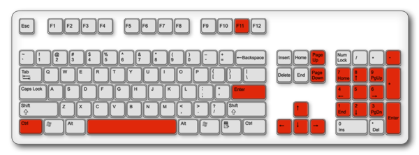

<div id="about" class="rounded">
	<div class="stageSpace">
		<h5>Utilisation du clavier</h5>
			<ul>
				<li>&quot;<strong>Espace</strong>&quot; ou &quot;<strong>Entrée</strong>&quot; : Lecture automatique
					<ul>
						<li>Touches <strong>1</strong>,<strong>2</strong>,<strong>3</strong>,...,<strong>9</strong> pour régler la vitesse (<strong>5, </strong>valeur par défaut)</li>
					</ul>
				</li>
				<li>Flèches &quot;<strong>Haut</strong>&quot; et &quot;<strong>Bas</strong>&quot; : Défilement de la page
					<ul>
						<li>Flèches &quot;<strong>Gauche</strong>&quot; et &quot;<strong>Droite</strong>&quot; : Défilement doux</li>
					</ul>
				</li>
				
				<li>&quot;<strong>+</strong>&quot; et &quot;<strong>-</strong>&quot; ou &quot;<strong>Ctrl</strong>&quot; + &quot;<strong>Molette de la souris</strong>&quot; : Ajustement de la taille du texte</li>
				<li>... et &quot;<strong>F11</strong>&quot; pour le plein écran !</li>
			</ul>
			<h5>Autre fonctions</h5>
			<ul>
				<li>Le fond de page est cliquable et peut <strong>glisser de haut en bas</strong></li>
				<li>Le <strong>texte est redimensionnale</strong> en largeur : Poignée &agrave; droite dans la marge</li>
				<li>Sélection du texte pour <strong>annoter</strong>, <strong>copier ou éditer</strong></li>
			</ul>
		<h5>Annotations dynamiques</h5>
			<ul>
				<li>Chaque paragraphe accueil un <strong>mini-forum <a href="http://disqus.com/" target="_blank">Disqus</a></strong>
					<ul>
						<li>Possiblité d'<strong>annoter le texte</strong> en utilisant les petites bulles sur la gauche</li>
					</ul>
				</li>
			</ul>
			<div class="spacer"></div>
			
	</div>
</div>